平均负载
在遇到性能问题时，第一时间通过执行 top 或者 uptime 查看系统平均负载，例如：
root@913ecec6c8c3:/workdir# uptime
23:43:40 up 1:13, 0 users, load average: 1.24, 0.35, 0.89
这几列的含义分别是：
23:43:40 // 当前时间
up 1:13 // 系统运行时间
0 users // 正在登录的用户数，这里不知道为什么是0
load average: 1.24, 0.35, 0.89 // 系统在过去1分钟，5分钟，15分钟内的平均负载
平均负载 是指在单位时间内，系统处于可运行状态和不可中断状态的平均进程数，也就是 平均活跃进程数。可运行状态的进程是指正在使用 CPU 或者正在等待 CPU 的进程数，也就是我们常用 ps 命令看到的处于 R 状态的进程。不可中断状态的进程则是正处于内核态关键流程中的进程，并且这些流程是不可打断的，比如最常见的是等待硬件设备的 I/O 响应，也就是我们在 ps 命令中看到的 D 状态（Uninterruptible Sleep，也称为 Disk Sleep）的进程。
简单点，可以理解为就是单位时间内平均活跃的进程数，举个例子，如果平均负载是2，那么：
- 当 CPU 数量是 1 的时候，表示过载 100%；
- 当 CPU 数量是 2 的时候，表示 CPU 刚好被完全利用；
- 当 CPU 数量是 4 的时候，表示每个 CPU 有 50% 的空闲；
所以说，平均负载是否合理，还要看 CPU 数量，举个简单的例子，如果在单核系统上看到的平均负载分别为：1.73，0.60，7.98，那么说明在过去 1 分钟内系统有 73% 的超载，在过去 15 分钟内，系统有 698% 的超载，总的来说，系统负载呈现下降趋势。
需要注意的是，平均负载与 CPU 是使用率的关系，从定义上来说，平均负载指的是单位时间内处于可运行状态和不可中断状态的进程数，所以不仅包括了正在使用 CPU 的进程，也包括了正在等待 CPU 和 I/O 进程。而 CPU 使用率指的是单位时间内 CPU 繁忙情况的一种统计，跟负载并不完全对应。比如：
- CPU 密集型进程，使用大量 CPU 也会导致平均负载升高，此时两者是一一致的；
- I/O 密集型进程，等待 I/O 也会导致平均负载升高，但 CPU 使用率不一定高；
- 大量等待 CPU 的进程调度也会导致平均负载升高，此时的 CPU 使用率也会比较高；
接下里使用一些工具通过模拟不同场景导致平均负载升高。
CPU 密集型进程
使用 stress 或者 stress-ng 命令模拟一个 CPU 使用率百分百的场景：
root@913ecec6c8c3:/# stress --cpu 1 --timeout 600
stress: info: [124] dispatching hogs: 1 cpu, 0 io, 0 vm, 0 hdd
然后我们观测平均负载的变化：
root@913ecec6c8c3:/# watch -d uptime
... load average: 1.00, 0.49, 0.20
这里我们会观测到一分钟内的平均负载会慢慢升到 1.00，我们再通过 mpstat 工具查看哪个 CPU 核心遭到了暴击：
root@913ecec6c8c3:/# mpstat -P ALL 5 1
Linux 4.19.76-linuxkit (913ecec6c8c3) 05/26/20 _x86_64_ (2 CPU)
...
21:37:35 CPU %usr %nice %sys %iowait %irq %soft %steal %guest %gnice %idle
21:37:40 all 48.69 0.00 0.73 0.00 0.00 0.21 0.00 0.00 0.00 50.37
21:37:40 0 0.61 0.00 1.02 0.00 0.00 0.00 0.00 0.00 0.00 98.37
21:37:40 1 99.14 0.00 0.43 0.00 0.00 0.43 0.00 0.00 0.00 0.00
从上面的结果可以看到，一个 CPU 的使用率已经接近 100% 了，我们再通过 pidstat 命令来看看哪个进程导致的：
root@913ecec6c8c3:/# pidstat -u 5 1
Linux 4.19.76-linuxkit (913ecec6c8c3) 05/26/20 _x86_64_ (2 CPU)
21:39:58 UID PID %usr %system %guest %wait %CPU CPU Command
21:40:03 0 125 100.00 0.20 0.00 0.00 100.20 1 stress
一目了然，可以看出是我们的模拟工具 stress 进程导致的。
I/O 密集型进程
我们这次再使用 stress-ng 模拟 I/O 压力：
root@913ecec6c8c3:/# stress-ng -i 1 --hdd 1 --timeout 600
stress-ng: info: [1448] dispatching hogs: 1 io, 1 hdd
然后我们观察平均负载的变化：
root@913ecec6c8c3:/# watch -d uptime
21:56:55 up 57 min, 0 users, load average: 3.16, 2.02, 1.12
发现一分钟内的平均负载还是会到很高，我们还是通过 mpstat 命令先查看 CPU 使用率的情况：
root@913ecec6c8c3:/# mpstat -P ALL 5
Linux 4.19.76-linuxkit (913ecec6c8c3) 05/26/20 _x86_64_ (2 CPU)
21:57:15 CPU %usr %nice %sys %iowait %irq %soft %steal %guest %gnice %idle
21:57:20 all 1.36 0.00 54.51 25.59 0.00 16.69 0.00 0.00 0.00 1.85
21:57:20 0 0.73 0.00 36.67 33.99 0.00 26.16 0.00 0.00 0.00 2.44
21:57:20 1 2.00 0.00 72.75 17.00 0.00 7.00 0.00 0.00 0.00 1.25
跟 CPU 密集型程序区别很大，用户进程占用的CPU比较少，大多都被系统消耗，而且 iowait 比较高，很显然这是有等待 I/O 导致平均负载升高，我们再来查看哪个进程导致的：
root@913ecec6c8c3:/# pidstat -u 5 1
Linux 4.19.76-linuxkit (913ecec6c8c3) 05/26/20 _x86_64_ (2 CPU)
21:56:04 UID PID %usr %system %guest %wait %CPU CPU Command
21:56:09 0 821 0.20 0.00 0.00 0.20 0.20 1 watch
21:56:09 0 1449 0.40 9.38 0.00 5.19 9.78 1 stress-ng-io
21:56:09 0 1450 1.40 83.03 0.00 5.39 84.43 1 stress-ng-hdd
果然还是我们的压力测试进程导致。
大量进程的场景
根据前面平均负载的定义，平均负载也包括正在等待 CPU 的进程，当系统中运行进程超出 CPU 能力时，就会出现等待 CPU 的进程。这次我们使用 stress 模拟 8 个进程的场景：
root@913ecec6c8c3:/# stress -c 8 --timeout 600
stress: info: [1963] dispatching hogs: 8 cpu, 0 io, 0 vm, 0 hdd
由于我的系统中只有 2 个 CPU，等待 CPU 的进程数明显超过了 CPU 的运行能力，所以系统的 CPU 处于严重的过载状态，平均负载会持续上升：
root@913ecec6c8c3:/# watch -d uptime
22:06:37 up 1:06, 0 users, load average: 7.43, 3.74, 2.04
我们再去查看两个可怜的 CPU 使用率：
root@913ecec6c8c3:/# mpstat -P ALL 5 1
Linux 4.19.76-linuxkit (913ecec6c8c3) 05/26/20 _x86_64_ (2 CPU)
22:06:11 CPU %usr %nice %sys %iowait %irq %soft %steal %guest %gnice %idle
22:06:16 all 99.58 0.00 0.42 0.00 0.00 0.00 0.00 0.00 0.00 0.00
22:06:16 0 99.58 0.00 0.42 0.00 0.00 0.00 0.00 0.00 0.00 0.00
22:06:16 1 99.58 0.00 0.42 0.00 0.00 0.00 0.00 0.00 0.00 0.00
已经被榨干了，毛都不剩，进一步查看罪魁祸首：
root@913ecec6c8c3:/# pidstat -u 5 1
Linux 4.19.76-linuxkit (913ecec6c8c3) 05/26/20 _x86_64_ (2 CPU)
22:08:14 UID PID %usr %system %guest %wait %CPU CPU Command
22:08:19 0 1964 24.80 0.00 0.00 75.00 24.80 1 stress
22:08:19 0 1965 24.80 0.00 0.00 75.40 24.80 0 stress
22:08:19 0 1966 24.80 0.00 0.00 75.40 24.80 0 stress
22:08:19 0 1967 24.80 0.00 0.00 75.20 24.80 1 stress
22:08:19 0 1968 25.00 0.00 0.00 75.40 25.00 1 stress
22:08:19 0 1969 24.80 0.20 0.00 75.20 25.00 0 stress
22:08:19 0 1970 24.80 0.00 0.00 75.40 24.80 0 stress
22:08:19 0 1971 25.00 0.00 0.00 75.00 25.00 1 stress
两个 CPU 被我们 8 个测试进程瓜分，各占 25%。所以当一旦出现平均负载高的时候，我们要查看各个 CPU 的使用率，避免出现一人干活多人围观的情况，也要分析出是由于等待 CPU 还是等待 I/O 造成的。
CPU 上下文切换
记得之前面试的时候，总跟别人说起多进程（线程）编程和异步编程的区别，总会提到一句：多进（线）程会引发 CPU 上下文切换，消耗过多的CPU资源，异步编程一般是单进程单线程，通过 EPOLL 等事件循环库监听不同的资源状态，不会引起大量的 CPU 切换。但是说实话，我从来没搞懂过，也没见到什么是 CPU 上下文切换。
回顾上节的概念平均负载，其中有一种情况是大量进程等待CPU也会导致负载上什，可是这个时候进程并没有在运行，它为什么还会导致负载上升呢？其实就是内核在做进程的上下文切换。
因为 Linux 是一个多任务的操作系统，它支持远大于 CPU 数量的进程同时运行，当然并不是真的同时在运行，只是因为系统在很短的时间内，将 CPU 轮流分配给他们，所以造成了任务被同时运行的错觉，因为大家都是平等的，所以 CPU 要做到雨露均沾。
CPU 在运行一个任务前，它要知道任务从哪里加载，又从哪里开始，也就是说，需要系统事先帮它设置好 CPU 寄存器和程序计数器（Program Counter，PC）。CPU 寄存器是容量小但是速度极快的内存，用来存储程序运行期间产生的中间数据。而程序计数器则是用来存储 CPU 正在执行的指令位置、或者下一条指令执行的位置。它们都是 CPU 在运行任何任务前，必须依赖的信息，所以也叫 CPU 上下文。
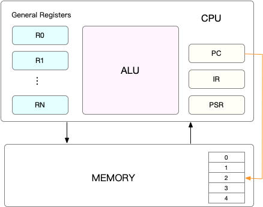
那么再来理解 CPU 上下文切换就比较容易了，无非就是操作系统把前一个任务的 CPU 上下文 保存起来，然后加载将要执行任务的上下文。被保存起来的上下文会被存在内核中，再次执行再把它加载进来就行了。
看样子上下文切换只是更新CPU寄存器的值，而寄存器又很快，为什么还是会影响性能，这就要看 CPU 上下文切换的是什么任务了
进程上下文切换
linux 中的进程是有不同特权的，进程的运行空间分为内核空间和用户空间。内核空间用于最高权限，可以直接访问所有资源。用户空间的进程只访问受限资源，不能直接访问内存等硬件设备，必须通过系统调用陷入到内核中，才能被允许访问这些资源。
一个进程必可避免的要访问系统资源，比如读取文件，读取内存，所以说一个进程既可以在用户空间运行又可以在内核空间运行。进程在用户空间运行时叫做用户态，在内核空间运行时叫做内核态。从用户态到内核态的转变是需要 系统调用 来完成。比如，当我们查看文件内容时，就需要多次系统调用来完成：
- 首先调用
open()打开文件 - 然后调用
read()读取文件 - 最后调用
close()关闭文件
然而，系统调用是要发生上下文切换的，而且一次系统调用发生了两次上下文切换。当从用户态转向内核态时，需要先保存进程用来用户态的指令位置，寄存器信息，接着为了执行内核态代码，CPU 寄存器需要更新为内核态指令的新位置，最后才是跳转到内核态执行内核任务。系统调用结束后，CPU 寄存器需要恢复到原来的用户态，然后切换回用户空间，继续运行进程。
不过，需要注意的是，系统调用是在同一个进程内执行的，不涉及虚拟内存等进程用户态的资源，也不会切换进程。所以系统调用也被叫做 特权模式切换，但其中的 CPU 上下文切换不可避免。
那么真正的上下文切换是什么样子的？众所周知，进程是由内核管理调度的，因此进程的切换只能发生在内核态，也正因为如此，进程的上下文不仅包括了虚拟内存、栈、全局变量等用户空间的资源，还包括了内核堆栈、寄存器等内核空间的状态。So，进程的上下文切换就比系统调用时多了一步：在保存当前进程的内核状态和 CPU 寄存器之前，需要先把该进程的虚拟内存、栈等保存下来；而加载了下一进程的内核态后，还需要刷新进程的虚拟内存和用户栈。
据可靠情报，每次上下文切换都需要几十纳秒到数微秒的 CPU 时间，在进程上下文切换次数较多的情况下，很容易导致 CPU 将大量时间耗费在寄存器、内核栈以及虚拟内存等资源的保存和恢复上，进而大大缩短了真正运行进程的时间，这也是导致平均负载升高的一个重要因素。
那么 CPU 在何时会切换运行另一个进程，只有在进程调度的时候，才需要切换上下文。Linux 为每个 CPU 都维护了一个就绪队列，将活跃进程（即正在运行和正在等待 CPU 的进程）按照优先级和等待 CPU 的时间排序，然后选择最需要 CPU 的进程，也就是优先级最高和等待 CPU 时间最长的进程来运行。
一般来说，进程被调度到 CPU 上运行有以下几个原因：
上一个进程执行完了，使用的 CPU 会被释放出来，这时就从就绪队列里面拿出一个运行；
为了保证公平调度，CPU 时间被划分为一段段的时间片，这些时间片再被轮流分配到各个进程。所以当一个进程的时间片被用完了，就会被挂起，切换到另一个进程。
系统资源不足事务，比如内存不足时，要等到资源满足才可以运行，这个时候进程也会被挂起，并由其他进程运行。
当前进程主动通过 sleep 函数将自己挂起，自然也会重新调度
当有更高优先级的进程需要运行时，当前进程也会被挂起。
发生硬件中断时，CPU 上的进程被挂起，转而执行中断服务进程。
线程上下文切换
线程与进程最大的区别在于，线程是调度的基本单位，而进程则是资源拥有的基本单位。说白了，所谓内核中的任务调度，实际上的调度对象是线程 ；而 进程只是给线程提供了虚拟内存、全局变量等资源。所以，对于线程和进程，我们可以这么理解：
当进程只有一个线程时，可以认为进程就等于线程。
当进程拥有多个线程时，这些线程会共享相同的虚拟内存和全局变量等资源。这些资源在线程上下文切换时是不需要修改的。
另外，线程也有自己的私有数据，比如栈和寄存器等，这些在上下文切换时也是需要保存的。
照这么说，线程切换其实分为两种情况，通进程内和不同进程内：
前后两个线程属于不同进程。此时，因为资源不共享，所以切换过程就跟进程上下文切换是一样。
前后两个线程属于同一个进程。此时，因为虚拟内存是共享的，所以在切换时，虚拟内存这些资源就保持不动，只需要切换线程的私有数据、寄存器等不共享的数据。
中断上下文切换
为了快速响应硬件的事件，中断处理会打断进程的正常调度和执行，转而调用中断处理程序，响应设备事件。而在打断其他进程时，就需要将进程当前的状态保存下来，这样在中断结束后，进程仍然可以从原来的状态恢复运行。
跟进程上下文不同，中断上下文切换并不涉及到进程的用户态。所以，即便中断过程打断了一个正处在用户态的进程，也不需要保存和恢复这个进程的虚拟内存、全局变量等用户态资源。中断上下文，其实只包括内核态中断服务程序执行所必需的状态，包括 CPU 寄存器、内核堆栈、硬件中断参数等。
对同一个 CPU 来说，中断处理比进程拥有更高的优先级，所以中断上下文切换并不会与进程上下文切换同时发生。同样道理，由于中断会打断正常进程的调度和执行，所以大部分中断处理程序都短小精悍，以便尽可能快的执行结束。另外，跟进程上下文切换一样，中断上下文切换也需要消耗 CPU，切换次数过多也会耗费大量的 CPU，甚至严重降低系统的整体性能。所以，当你发现中断次数过多时，就需要注意去排查它是否会给你的系统带来严重的性能问题。
上下文切换分析
过多的上下文切换，会把 CPU 时间消耗在寄存器、内核栈以及虚拟内存等数据的保存和恢复上，缩短进程真正运行的时间，成了系统性能大幅下降的一个元凶。们可以使用 vmstat 这个工具，来查询系统的上下文切换情况。安装方式：
apt-get install sysbench sysstat
来看一个 vmstat 的例子
root@913ecec6c8c3:/workdir# vmstat 5 1
procs -----------memory---------- ---swap-- -----io---- -system-- ------cpu-----
r b swpd free buff cache si so bi bo in cs us sy id wa st
2 0 0 3091192 59644 582512 0 0 1 1 67 1 0 0 100 0 0
其中需要重点关注的四列内容：
- cs(context switch)：每秒钟上下文切换的次数
- in(interrupt)：每秒中断次数
- r(Running or Runnable) 就绪队列的长度，正在运行和等待CPU的进程数
- b(Blocked) 处于不可中断睡眠状态的进程数
vmstat 只给出了系统总体的上下文切换情况，想要查看每个进程的详细情况，就需要使用 pidstat 了，通过 pidstat -w 就可以查看每个进程上下文切换情况：
root@913ecec6c8c3:/workdir# pidstat -w 5
Linux 4.19.76-linuxkit (913ecec6c8c3) 05/28/20 _x86_64_ (4 CPU)
22:37:11 UID PID cswch/s nvcswch/s Command
22:37:16 0 1366 0.20 0.00 pidstat
22:37:16 UID PID cswch/s nvcswch/s Command
22:37:21 0 1366 0.20 0.00 pidstat
其中有两列比较有意思，一个是 cswch，表示 自愿上下文切换（voluntary context switches） 次数，另一个是 nvcswch，表示 非自愿上下文切换（non voluntary context switches） 次数。区别在于：
自愿上下文切换，是指进程无法获取资源时，导致的上下文切换。比如，I/O，内存不足，就会发生资源上下文切换；
非自愿上下文切换，则是值进程由于时间片已到，被系统强制调度，进而发生的上下文切换；
这两种切换意味不同的性能问题。
上下文切换模拟
我们将使用 sysbench 工具模拟系统多线程调度的瓶颈（以20个线程运行5分钟基准测试）:
root@913ecec6c8c3:/workdir# sysbench --threads=20 --time=300 threads run
sysbench 1.0.18 (using system LuaJIT 2.1.0-beta3)
Running the test with following options:
Number of threads: 20
Initializing random number generator from current time
Initializing worker threads...
Threads started!
然后我们使用 vmstat 查看上下文切换情况：
root@913ecec6c8c3:/# vmstat 1
procs -----------memory---------- ---swap-- -----io---- -system-- ------cpu-----
r b swpd free buff cache si so bi bo in cs us sy id wa st
12 0 0 3088072 59676 583036 0 0 1 1 72 3 0 0 100 0 0
12 0 0 3088064 59676 583036 0 0 0 0 28414 471622 16 75 9 0 0
9 0 0 3088064 59676 583036 0 0 0 0 28676 492647 17 74 9 0 0
10 0 0 3088064 59676 583036 0 0 0 0 25577 507974 15 66 19 0 0
14 0 0 3088064 59676 583036 0 0 0 0 26545 463018 16 74 10 0 0
10 0 0 3088064 59676 583036 0 0 0 0 26747 484506 15 73 12 0 0
9 0 0 3088064 59676 583036 0 0 0 0 26250 454500 18 73 9 0 0
11 0 0 3088064 59676 583036 0 0 0 0 24254 423690 17 73 10 0 0
10 0 0 3086536 59676 583036 0 0 0 0 29882 485909 16 76 8 0 0
13 0 0 3085780 59676 583124 0 0 0 0 28158 460459 16 75 9 0 0
14 0 0 3085780 59676 583124 0 0 0 0 28533 475176 16 73 10 0 0
11 0 0 3085780 59676 583124 0 0 0 0 29070 477886 16 74 10 0 0
9 0 0 3085780 59676 583124 0 0 0 0 28956 471644 16 76 8 0 0
10 0 0 3087804 59684 583116 0 0 0 12 24487 437283 19 72 9 0 0
11 0 0 3087804 59684 583128 0 0 0 0 18452 388913 16 69 15 0 0
10 0 0 3087804 59684 583128 0 0 0 0 28702 478880 17 73 9 0 0
可以看到 cs 列从开始的 3 上升到了 50 多万，然后看到：
r 列，就绪队列的长度远远超过了系统 CPU 的个数 4，所以会产生大量的 CPU 竞争；
us (user) 和 sy (system) 列：这两列的 CPU 使用率加起来几乎达到 100%，而且系统占用的 CPU 高得多；
in 列：中断次数也达到了接近3万，说明中断处理也是一个潜在的问题；
从这可以得出：超越 CPU 运行能力的大量线程导致了 CPU 上下文切换过多，CPU 上下文切换过多导致系统的 CPU 的使用率上升；我们再来使用 pidsta 查看 CPU 和进程上下文切换的情况：
root@913ecec6c8c3:/# pidstat -w -u 1
Linux 4.19.76-linuxkit (913ecec6c8c3) 05/28/20 _x86_64_ (4 CPU)
22:57:52 UID PID %usr %system %guest %wait %CPU CPU Command
22:57:53 0 1440 65.00 284.00 0.00 0.00 349.00 1 sysbench
22:57:52 UID PID cswch/s nvcswch/s Command
22:57:53 0 1461 1.00 1.00 pidstat
从这里可以很明显的看出，系统使用率的上升是由于 sysbench 导致的，而且大部分 CPU 都是被系统使用，用户态进程并没有占用多少 CPU 时间片。不过，看着输出，感觉上下文切换不对啊。冷静思考一下， Linux 调度的基本单位是线程，我们模拟的也是现成的调度问题，那我们应该查看线程的数据，所以如下：
root@913ecec6c8c3:/# pidstat -wt -u 1
Linux 4.19.76-linuxkit (913ecec6c8c3) 05/28/20 _x86_64_ (4 CPU)
....
22:59:23 UID TGID TID cswch/s nvcswch/s Command
22:59:24 0 - 1441 3714.56 22385.44 |__sysbench
....
22:59:24 0 - 1451 3168.93 17614.56 |__sysbench
22:59:24 0 - 1452 2867.96 20373.79 |__sysbench
22:59:24 0 - 1453 3141.75 22448.54 |__sysbench
22:59:24 0 - 1454 3378.64 19192.23 |__sysbench
22:59:24 0 - 1455 3065.05 16215.53 |__sysbench
22:59:24 0 - 1456 3720.39 20452.43 |__sysbench
22:59:24 0 - 1457 3349.51 20050.49 |__sysbench
22:59:24 0 - 1458 3919.42 23687.38 |__sysbench
22:59:24 0 - 1459 2959.22 19080.58 |__sysbench
22:59:24 0 - 1460 4139.81 22142.72 |__sysbench
22:59:24 0 1462 - 0.97 17.48 pidstat
22:59:24 0 - 1462 0.97 16.50 |__pidstat
从上面的结果可以看出，sysbench 子线程发生非自愿切换次数相当多，所以我们找到了罪魁祸首，就是因为大量的线程存在，超过了 CPU 运行能力，需要被内核调度，所以发生了大量的上下文切换。
我们之前在用 vmstat 查看系统上下文切换时，发现中断次数也随着升高了不少，中断只属于内核态，所以 pidstat 是无法查看其信息的，我们必须从 /proc/interrupts 中读取相关信息。/proc 实际上是 Linux 的一个虚拟文件系统， 用于内核和用户之间的通信。我们使用 watch -d cat /proc/interrupts 观察变化情况：
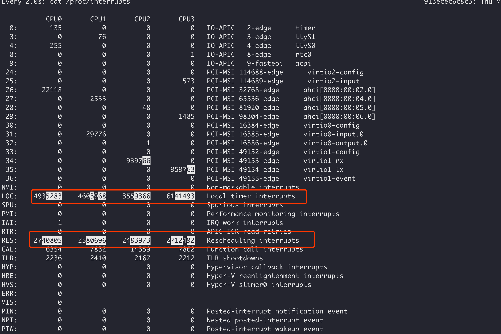
我们可以看到变化最快的是两种，时钟中断处理和重调度中断（RES），我中 RES 用来唤醒空闲状态的 CPU 来调度新的任务运行。这是多处理器系统（SMP）中，调度器用来分散任务到不同 CPU 的机制，通常也被称为处理器间中断（Inter-Processor Interrupts，IPI）。所以，这里的中断升高还是因为过多任务的调度问题，跟前面上下文切换次数的分析结果是一致的。
最后，每秒多少次上下文切换才算正常，取决于系统本身 CPU 性能，但是当上下文切换次数达到几十万而且居高不下的时候，就很可能出现性能问题，这时候还需要关注上下文切换类型，再做分析，例如：
资源上下文切换过多，说明进程都在等资源；
非自愿上下文切换次数过多，说明进程被强制调度，也就是在争抢 CPU，说明 CPU 的确成了瓶颈；
中断次数变多，说明 CPU 被中断处理程序占用，需要通过查看
/proc/interrupts查看具体中断类型。
CPU 使用率过高
经常遇到的情况是，我们知道CPU的使用率较高，我们也能够用 top，ps 以及 pidstat 等工具查到哪个进程在占用大量 CPU，但我们就是无从下手，不知道具体到进程中的哪个函数导致的，在学习 《Linux 性能优化实战》之后，学到两种方法，今天来介绍一下。
perf top
perf top，类似于 top，它能够实时显示占用 CPU 时钟最多的函数或者指令，因此可以用来查找热点函数，使用界面如下所示：
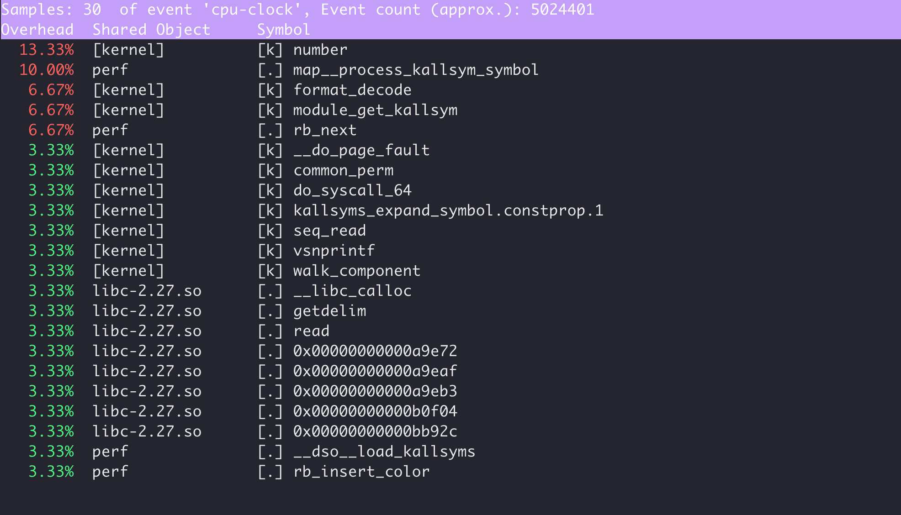
输出结果中，第一行包含三个数据，分别是采样数（Samples）、事件类型（event）和事件总数量（Event count）。比如这个例子中，perf 总共采集了 30 个 CPU 时钟事件，而总事件数则为 5024401。另外，采样数需要我们特别注意。如果采样数过少（比如只有十几个），那下面的排序和百分比就没什么实际参考价值了。
再往下看是一个表格式样的数据，每一行包含四列，分别是：
- 第一列 Overhead ，是该符号的性能事件在所有采样中的比例，用百分比来表示。
- 第二列 Shared ，是该函数或指令所在的动态共享对象（Dynamic Shared Object），如内核、进程名、动态链接库名、内核模块名等。
- 第三列 Object ，是动态共享对象的类型。比如 [.] 表示用户空间的可执行程序、或者动态链接库，而 [k] 则表示内核空间。
- 第四列 Symbol ，是符号名，也就是函数名。当函数名未知时，用十六进制的地址来表示。
perf record 和 perf report
perf top 虽然实时展示了系统的性能信息，但它的缺点是并不保存数据，也就无法用于离线或者后续的分析。而 perf record 则提供了保存数据的功能，保存后的数据，需要你用 perf report 解析展示
$ perf record # 按Ctrl+C终止采样
[ perf record: Woken up 1 times to write data ]
[ perf record: Captured and wrote 0.452 MB perf.data (6093 samples) ]
$ perf report # 展示类似于perf top的报告
实战体验
写一段垃圾的 Go 代码来体验一下：
1 | package main |
编译好之后我们运行：
./perf_linux -cycles 10000000000
在另一个终端我们使用 perf top -g -p 29126 查看指定进程：
我们找到占比最多的 main.main 函数也是我们的入口函数，使用方向下键选中，并且按 Enter 键进入：
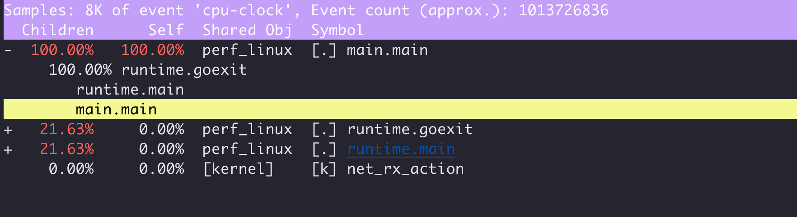
然后再选择 main.main，点击 Enter 键：
然后点击 Enter 进入，根据占比我们就大概知道是什么位置了：
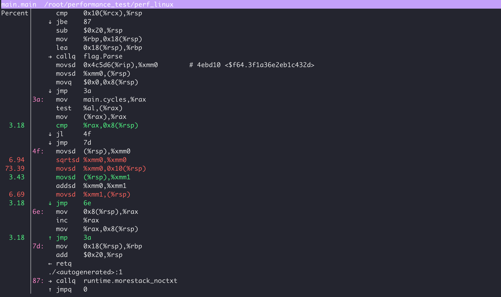
另外对于一些短命程序导致的 CPU 升高，很难定位，看到的 CPU 被消耗光，但是却找不到根因，可以使用 pstree，perf record 以及 execsnoop 来定位。
1 | package main |
然后我们启动并且运行，效果如下视频：
期间我们使用上节用到的 perf record 和 pref report 命令输出性能报告，并且使用 pstree 命令输出了进程族谱，查看到异常的 stress 进程是哪个父进程启动的，而且使用 execsnoop 监控短时进程，正是由于这种短时进程大量启动导致CPU等待IO，导致貌似空闲的 CPU 没了。
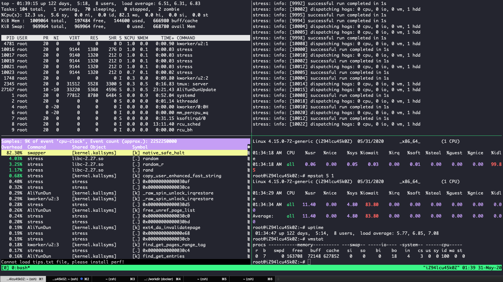
进程状态
top 和 ps 是最常用的查看进程状态的工具，输出中 S 列（也就是 Status 列）表示进程的状态，经常可以看到 R、D、Z、S、I 等几个状态，它们分别是什么意思呢？
$ top
PID USER PR NI VIRT RES SHR S %CPU %MEM TIME+ COMMAND
28961 root 20 0 43816 3148 4040 R 3.2 0.0 0:00.01 top
620 root 20 0 37280 33676 908 D 0.3 0.4 0:00.01 app
1 root 20 0 160072 9416 6752 S 0.0 0.1 0:37.64 systemd
1896 root 20 0 0 0 0 Z 0.0 0.0 0:00.00 devapp
2 root 20 0 0 0 0 S 0.0 0.0 0:00.10 kthreadd
4 root 0 -20 0 0 0 I 0.0 0.0 0:00.00 kworker/0:0H
6 root 0 -20 0 0 0 I 0.0 0.0 0:00.00 mm_percpu_wq
7 root 20 0 0 0 0 S 0.0 0.0 0:06.37 ksoftirqd/0
- R 是 Running 或 Runnable 的缩写，表示进程在 CPU 的就绪队列中，正在运行或者正在等待运行。
- D 是 Disk Sleep 的缩写，也就是不可中断状态睡眠（Uninterruptible Sleep），一般表示进程正在跟硬件交互，并且交互过程不允许被其他进程或中断打断。
- Z 是 Zombie 的缩写，它表示僵尸进程，也就是进程实际上已经结束了，但是父进程还没有回收它的资源（比如进程的描述符、PID 等）。
- S 是 Interruptible Sleep 的缩写，也就是可中断状态睡眠，表示进程因为等待某个事件而被系统挂起。当进程等待的事件发生时，它会被唤醒并进入 R 状态。
- I 是 Idle 的缩写，也就是空闲状态，用在不可中断睡眠的内核线程上。前面说了，硬件交互导致的不可中断进程用 D 表示，但对某些内核线程来说，它们有可能实际上并没有任何负载，用 Idle 正是为了区分这种情况。要注意，D 状态的进程会导致平均负载升高， I 状态的进程却不会。
- T 也就是 Stopped 或 Traced 的缩写，表示进程处于暂停或者跟踪状态。向一个进程发送 SIGSTOP 信号，它就会因响应这个信号变成暂停状态（Stopped）；再向它发送 SIGCONT 信号，进程又会恢复运行（如果进程是终端里直接启动的，则需要你用 fg 命令，恢复到前台运行）。而当你用调试器（如 gdb）调试一个进程时，在使用断点中断进程后，进程就会变成跟踪状态，这其实也是一种特殊的暂停状态，只不过你可以用调试器来跟踪并按需要控制进程的运行。
- X 是 Dead 的缩写，表示进程已经消亡，所以你不会在 top 或者 ps 命令中看到它。
其中僵尸进程，这是多进程应用很容易碰到的问题。正常情况下，当一个进程创建了子进程后，它应该通过系统调用 wait() 或者 waitpid() 等待子进程结束，回收子进程的资源；而子进程在结束时，会向它的父进程发送 SIGCHLD 信号，所以，父进程还可以注册 SIGCHLD 信号的处理函数，异步回收资源。如果父进程没这么做，或是子进程执行太快，父进程还没来得及处理子进程状态，子进程就已经提前退出，那这时的子进程就会变成僵尸进程。通常，僵尸进程持续的时间都比较短，在父进程回收它的资源后就会消亡；或者在父进程退出后，由 init 进程回收后也会消亡。一旦父进程没有处理子进程的终止，还一直保持运行状态，那么子进程就会一直处于僵尸状态。大量的僵尸进程会用尽 PID 进程号，导致新进程不能创建，所以这种情况一定要避免。
当使用 ps 命令查看进程状态是，会遇到一些奇怪的输出：
$ ps aux | grep /app
root 4009 0.0 0.0 4376 1008 pts/0 Ss+ 05:51 0:00 /app
root 4287 0.6 0.4 37280 33660 pts/0 D+ 05:54 0:00 /app
root 4288 0.6 0.4 37280 33668 pts/0 D+ 05:54 0:00 /app
其中 S 和 D 我们知道是什么意思，又来个 s 和 +，其实可以通过 man ps 查询。其实 s 表示这个进程是一个会话的领导进程，而 + 表示前台进程组。进程组 表示一组相互关联的进程，比如每个子进程都是父进程所在组的成员，而 会话 是指共享同一个控制终端的一个或多个进程组。
比如，我们通过 SSH 登录服务器，就会打开一个控制终端（TTY），这个控制终端就对应一个会话。而我们在终端中运行的命令以及它们的子进程，就构成了一个个的进程组，其中，在后台运行的命令，构成后台进程组；在前台运行的命令，构成前台进程组。
iowait 较高问题分析
有时候我们使用 top 工具查看系统性能时，会发现 iowait 特别高，例如：
$ top
top - 05:56:23 up 17 days, 16:45, 2 users, load average: 2.00, 1.68, 1.39
Tasks: 247 total, 1 running, 79 sleeping, 0 stopped, 115 zombie
%Cpu0 : 0.0 us, 0.7 sy, 0.0 ni, 38.9 id, 60.5 wa, 0.0 hi, 0.0 si, 0.0 st
%Cpu1 : 0.0 us, 0.7 sy, 0.0 ni, 4.7 id, 94.6 wa, 0.0 hi, 0.0 si, 0.0 st
...
例如，这里两个 CPU 的使用率情况，用户 CPU 和系统 CPU 都不高，但 iowait 分别是 60.5% 和 94.6%，运行 dstat 1 10 观察 CPU 和 I/O 的使用情况：
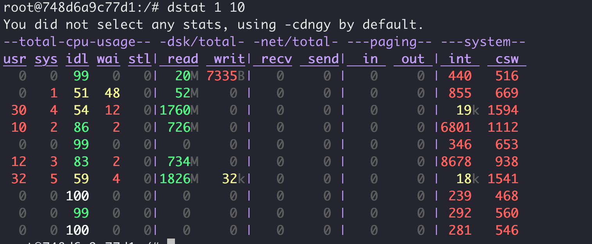
从 dstat 的输出，我们可以看到，每当 iowait 升高（wai）时，磁盘的读请求（read）都会很大。这说明 iowait 的升高跟磁盘的读请求有关，很可能就是磁盘读导致的。我们继续使用 top 命令查看，可能会发现一些 D 状态进程，例如：
$ top
...
1083 root 20 0 70052 65716 200 D 2.6 1.6 0:00.08 app
1084 root 20 0 70052 65716 200 D 2.6 1.6 0:00.08 app
1082 root 20 0 37016 3468 2760 R 0.7 0.1 0:00.06 top
1 root 20 0 4512 1584 1500 S 0.0 0.0 0:00.11 app
...
我们再使用 pidstat 命令查看进程的 I/O 统计数据：
# -d 展示 I/O 统计数据，-p 指定进程号，间隔 1 秒输出 3 组数据
root@748d6a9c77d1:/# pidstat -d -p 1083 1 3
Linux 4.19.76-linuxkit (748d6a9c77d1) 05/31/20 _x86_64_ (4 CPU)
15:30:48 UID PID kB_rd/s kB_wr/s kB_ccwr/s iodelay Command
15:30:49 0 1083 0.00 0.00 0.00 0 app
15:30:50 0 1083 0.00 0.00 0.00 0 app
15:30:51 0 1083 0.00 0.00 0.00 0 app
Average: 0 1083 0.00 0.00 0.00 0 app
在这个输出中， kB_rd 表示每秒读的 KB 数， kB_wr 表示每秒写的 KB 数，iodelay 表示 I/O 的延迟（单位是时钟周期）。它们都是 0，那就表示此时没有任何的读写，说明问题不是 1083 进程导致的。那要怎么知道，到底是哪个进程在进行磁盘读写呢？我们继续使用 pidstat，但这次去掉进程号，干脆就来观察所有进程的 I/O 使用情况。
root@748d6a9c77d1:/# pidstat -d 1 20
Linux 4.19.76-linuxkit (748d6a9c77d1) 05/31/20 _x86_64_ (4 CPU)
15:34:18 UID PID kB_rd/s kB_wr/s kB_ccwr/s iodelay Command
15:34:19 UID PID kB_rd/s kB_wr/s kB_ccwr/s iodelay Command
15:34:20 0 1221 364543.50 0.00 0.00 3 app
15:34:20 0 1222 370687.50 0.00 0.00 4 app
15:34:20 UID PID kB_rd/s kB_wr/s kB_ccwr/s iodelay Command
15:34:21 0 1221 946176.50 0.00 0.00 49 app
15:34:21 0 1222 940032.50 0.00 0.00 50 app
15:34:21 UID PID kB_rd/s kB_wr/s kB_ccwr/s iodelay Command
15:34:22 UID PID kB_rd/s kB_wr/s kB_ccwr/s iodelay Command
15:34:23 UID PID kB_rd/s kB_wr/s kB_ccwr/s iodelay Command
发现确实 app 进程导致，那我们怎么知道 app 进程在执行什么 I/O 操作呢？我们知道，进程想要访问磁盘，就必须使用系统调用，所以接下来，重点就是找出 app 进程的系统调用了。
strace 正是最常用的跟踪进程系统调用的工具。我们从 pidstat 的输出中拿到进程的 PID 号，然后在终端中运行 strace 命令，并用 -p 参数指定 PID 号：
root@748d6a9c77d1:/# strace -p 1221
strace: attach: ptrace(PTRACE_SEIZE, 1221): Operation not permitted
失望，没有得到想要的结果，但这是为什么呢？我们再使用 ps 命令查看发现它已经变僵尸了，僵尸进程实际上已经推出了，所以无法追踪：
root@748d6a9c77d1:/# ps -aux | grep 1221
root 1221 0.1 0.0 0 0 pts/0 Z+ 15:34 0:00 [app] <defunct>
我们前面使用过 perf record 和 perf report 命令来输出系统函数调用报告，我们在这里依然可以用它：
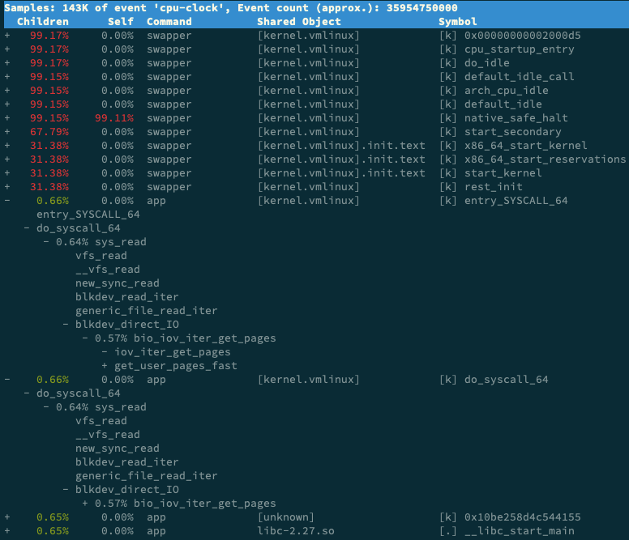
swapper 是内核中的调度进程，你可以先忽略掉。我们来看其他信息，你可以发现， app 的确在通过系统调用 sys_read() 读取数据。并且从 new_sync_read 和 blkdev_direct_IO 能看出，进程正在对磁盘进行直接读，也就是绕过了系统缓存，每个读请求都会从磁盘直接读，这就可以解释我们观察到的 iowait 升高了。看来，罪魁祸首是 app 内部进行了磁盘的直接 I/O ，接着我们就可以找我们的应用程序哪里直接读文件了。
僵尸进程分析
我们在 top 的输出结果中也看到大量的 Z 进程，我们知道 Z 进程代表该进程已经退出，只是父进程没有回收其资源导致。因为大量的 Z 进程会耗尽系统 pid 号，所以我们还是要解决它，解决他们的本质是还要父进程里面消灭他们。
我们随便找一个僵尸进程，查找他的父进程：
root@748d6a9c77d1:/# pstree -aps 43
app,1
`-(app,43)
然后我们去我们的程序查看，进程在创建子进程后，有没有等待他结束。我们可以使用如下命令杀死父进程进而杀死僵尸进程：
ps -A -o stat,ppid,pid,cmd | grep -e ‘^[Zz]’ | awk ‘{print $2}’ | xargs kill -9
软中断
Linux 将中断处理过程分为两个阶段，也就是上半部和下半部：
上半部用来快速处理中断，它在中断禁止模式下运行，主要处理跟硬件紧密相关的或时间敏感的工作。上半部直接处理硬件请求，也就是硬件中断，特点是快速执行
下半部用来延迟处理上半部未完成的工作，通常以内核线程的方式运行。下半部分则由内核触发，特点是快速执行。
举个例子，网卡接收到数据包后，会通过硬件中断的方式，通知内核有新的数据到了。这时，内核就应该调用中断处理程序来响应它。然后更新一下硬件寄存器的状态（表示数据已经读好了），最后再发送一个软中断信号，通知下半部做进一步的处理。
实际上，上半部会打断 CPU 正在执行的任务，然后立即执行中断处理程序。而下半部以内核线程的方式执行，并且每个 CPU 都对应一个软中断内核线程，名字为 ksoftirqd/CPU 编号，比如说， 0 号 CPU 对应的软中断内核线程的名字就是 ksoftirqd/0。
root@iZ94lcu45k0Z:~# ps -aux | grep ksoftirqd
root 7 0.0 0.0 0 0 ? S Jan29 0:32 [ksoftirqd/0]
root 30590 0.0 0.1 14428 1012 pts/0 S+ 22:46 0:00 grep --color=auto ksoftirqd
proc 文件系统。它是一种内核空间和用户空间进行通信的机制，可以用来查看内核的数据结构，或者用来动态修改内核的配置。其中：
/proc/softirqs提供了软中断的运行情况；/proc/interrupts提供了硬中断的运行情况。
运行下面的命令，查看 /proc/softirqs 文件的内容，你就可以看到各种类型软中断在不同 CPU 上的累积运行次数：
root@913ecec6c8c3:/# cat /proc/softirqs
CPU0 CPU1 CPU2 CPU3
HI: 0 0 0 0
TIMER: 56364 101156 79623 107630
NET_TX: 4 11 8 7
NET_RX: 19 673 0 1
BLOCK: 2759 3107 2028 4077
IRQ_POLL: 0 0 0 0
TASKLET: 1 0 0 0
SCHED: 41586 70250 44559 69909
HRTIMER: 0 0 0 0
RCU: 30472 95774 38898 49439
从输出结果中可以看出，软中断包括了10个类别，分别对应不同的工作类型，比如 NET_RX 表示网络接收中断，而 NET_TX 表示网络发送中断。要注意同一种软中断在不同 CPU 上的分布情况，也就是同一行的内容。正常情况下，同一种中断在不同 CPU 上的累积次数应该差不多。比如这个界面中，NET_RX 在 CPU0 和 CPU1 上的中断次数基本是同一个数量级，相差不大。软中断不只包括了刚刚所讲的硬件设备中断处理程序的下半部，一些内核自定义的事件也属于软中断，比如内核调度和 RCU 锁（Read-Copy Update 的缩写，RCU 是 Linux 内核中最常用的锁之一）等。
洪水攻击
网上经常看到洪水攻击 SYN FLOOD 的讨论，今天就摸你洪水攻击，致使 CPU 升高，不干正事的例子。准备一个nginx的简易网站，例如：
$ curl http://192.168.0.30/
<!DOCTYPE html>
<html>
<head>
<title>Welcome to nginx!</title>
...
接着我们在运行 hping3 命令，来模拟 nginx 的客户端请求：
# -S参数表示设置TCP协议的SYN（同步序列号），-p表示目的端口为80
# -i u100表示每隔100微秒发送一个网络帧
# 注：如果你在实践过程中现象不明显，可以尝试把100调小，比如调成10甚至1
$ hping3 -S -p 80 -i u100 192.168.0.30
我们再进入 nginx 所在服务器，运行 top 命令查看系统资源使用情况：
# top运行后按数字1切换到显示所有CPU
$ top
top - 10:50:58 up 1 days, 22:10, 1 user, load average: 0.00, 0.00, 0.00
Tasks: 122 total, 1 running, 71 sleeping, 0 stopped, 0 zombie
%Cpu0 : 0.0 us, 0.0 sy, 0.0 ni, 96.7 id, 0.0 wa, 0.0 hi, 3.3 si, 0.0 st
%Cpu1 : 0.0 us, 0.0 sy, 0.0 ni, 95.6 id, 0.0 wa, 0.0 hi, 4.4 si, 0.0 st
...
PID USER PR NI VIRT RES SHR S %CPU %MEM TIME+ COMMAND
7 root 20 0 0 0 0 S 0.3 0.0 0:01.64 ksoftirqd/0
16 root 20 0 0 0 0 S 0.3 0.0 0:01.97 ksoftirqd/1
2663 root 20 0 923480 28292 13996 S 0.3 0.3 4:58.66 docker-containe
3699 root 20 0 0 0 0 I 0.3 0.0 0:00.13 kworker/u4:0
3708 root 20 0 44572 4176 3512 R 0.3 0.1 0:00.07 top
1 root 20 0 225384 9136 6724 S 0.0 0.1 0:23.25 systemd
2 root 20 0 0 0 0 S 0.0 0.0 0:00.03 kthreadd
...
平均负载是0，就绪队列里面就只有一个进程，平均 CPU 使用率最高的也只有 4.4%，进程列表，CPU 使用率最高的进程也只有 0.3%，毫无异常。但是 ksoftirqd/0 软中断进程使用率最高，而且排在最前面，毫无方法的情况下，就拿排头兵开刀，我们观察一下软中断的变化情况：
$ watch -d cat /proc/softirqs
CPU0 CPU1
HI: 0 0
TIMER: 1083906 2368646
NET_TX: 53 9
NET_RX: 1550643 1916776
BLOCK: 0 0
IRQ_POLL: 0 0
TASKLET: 333637 3930
SCHED: 963675 2293171
HRTIMER: 0 0
RCU: 1542111 1590625
通过 /proc/softirqs 文件内容的变化情况，你可以发现， TIMER（定时中断）、NET_RX（网络接收）、SCHED（内核调度）、RCU（RCU 锁）等这几个软中断都在不停变化。
其中，NET_RX，也就是网络数据包接收软中断的变化速率最快。而其他几种类型的软中断，是保证 Linux 调度、时钟和临界区保护这些正常工作所必需的，所以它们有一定的变化倒是正常的。
我们通过 sar 工具查看网络系统的收发情况，它不仅可以观察网络收发的吞吐量（BPS，每秒收发的字节数），还可以观察网络收发的 PPS，即每秒收发的网络帧数。
# -n DEV 表示显示网络收发的报告，间隔1秒输出一组数据
$ sar -n DEV 1
15:03:46 IFACE rxpck/s txpck/s rxkB/s txkB/s rxcmp/s txcmp/s rxmcst/s %ifutil
15:03:47 eth0 12607.00 6304.00 664.86 358.11 0.00 0.00 0.00 0.01
15:03:47 docker0 6302.00 12604.00 270.79 664.66 0.00 0.00 0.00 0.00
15:03:47 lo 0.00 0.00 0.00 0.00 0.00 0.00 0.00 0.00
15:03:47 veth9f6bbcd 6302.00 12604.00 356.95 664.66 0.00 0.00 0.00 0.05
sar 的输出界面，简单介绍一下:
- 第二列：IFACE 表示网卡。
- 第三、四列：rxpck/s 和 txpck/s 分别表示每秒接收、发送的网络帧数，也就是 PPS。
- 第五、六列：rxkB/s 和 txkB/s 分别表示每秒接收、发送的千字节数，也就是 BPS。
对网卡 eth0 来说，每秒接收的网络帧数比较大，达到了 12607，而发送的网络帧数则比较小，只有 6304；每秒接收的千字节数只有 664 KB，而发送的千字节数更小，只有 358 KB。就是说接收的 PPS 比较大，而接收的 BPS 却很小，只有 664 KB。直观来看网络帧应该都是比较小的，我们稍微计算一下，664*1024/12607 = 54 字节，说明平均每个网络帧只有 54 字节，这显然是很小的网络帧，也就是我们通常所说的小包问题。
那现在就是要知道这些小包是从哪里发来的，我们使用 tcpdump 抓包工具指定网卡 eth0，并且指定 TCP 协议和 80 端口精准抓包。
# -i eth0 只抓取eth0网卡，-n不解析协议名和主机名
# tcp port 80表示只抓取tcp协议并且端口号为80的网络帧
$ tcpdump -i eth0 -n tcp port 80
15:11:32.678966 IP 192.168.0.2.18238 > 192.168.0.30.80: Flags [S], seq 458303614, win 512, length 0
...
从 tcpdump 的输出中，可以发现，从 192.168.0.2 的 18238 端口发送到 192.168.0.30 的 80 端口有大量的 SYN（Flags[S]） 包，再加上前面用 sar 发现的， PPS 超过 12000 的现象，现在我们可以确认，这就是从 192.168.0.2 这个地址发送过来的 SYN FLOOD 攻击。
SYN FLOOD 问题最简单的解决方法，就是从交换机或者硬件防火墙中封掉来源 IP，这样 SYN FLOOD 网络帧就不会发送到服务器中。
CPU 性能问题定位
原文：https://time.geekbang.org/column/article/72685
分析 CPU 的性能瓶颈，我们得有一些指标来衡量，量化分析，首先我们想到的是 CPU 使用率，这也是实际环境中最常见的一个性能指。CPU 使用率描述了非空闲时间占总 CPU 时间的百分比，根据 CPU 上运行任务的不同，又被分为用户 CPU、系统 CPU、等待 I/O CPU、软中断和硬中断等。
用户 CPU 使用率，包括用户态 CPU 使用率（user）和低优先级用户态 CPU 使用率（nice），表示 CPU 在用户态运行的时间百分比。用户 CPU 使用率高，通常说明有应用程序比较繁忙。
系统 CPU 使用率，表示 CPU 在内核态运行的时间百分比（不包括中断）。系统 CPU 使用率高，说明内核比较繁忙。
等待 I/O 的 CPU 使用率，通常也称为 iowait，表示等待 I/O 的时间百分比。iowait 高，通常说明系统与硬件设备的 I/O 交互时间比较长。
软中断和硬中断的 CPU 使用率，分别表示内核调用软中断处理程序、硬中断处理程序的时间百分比。它们的使用率高，通常说明系统发生了大量的中断。
除了上面这些，还有在虚拟化环境中会用到的窃取 CPU 使用率（steal）和客户 CPU 使用率（guest），分别表示被其他虚拟机占用的 CPU 时间百分比，和运行客户虚拟机的 CPU 时间百分比。
其次是 平均负载（Load Average），也就是系统的平均活跃进程数。它反应了系统的整体负载情况，主要包括三个数值，分别指过去 1 分钟、过去 5 分钟和过去 15 分钟的平均负载。理想情况下，平均负载等于逻辑 CPU 个数，这表示每个 CPU 都恰好被充分利用。如果平均负载大于逻辑 CPU 个数，就表示负载比较重了。
最后就是平时不容易观测到的 上下文切换，包括：
无法获取资源而导致的自愿上下文切换；
被系统强制调度导致的非自愿上下文切换。
上下文切换，本身是保证 Linux 正常运行的一项核心功能。但过多的上下文切换，会将原本运行进程的 CPU 时间，消耗在寄存器、内核栈以及虚拟内存等数据的保存和恢复上，缩短进程真正运行的时间，成为性能瓶颈。
除了上面几种，还有一个指标，CPU 缓存的命中率。由于 CPU 发展的速度远快于内存的发展，CPU 的处理速度就比内存的访问速度快得多。这样，CPU 在访问内存的时候，免不了要等待内存的响应。为了协调这两者巨大的性能差距，CPU 缓存（通常是多级缓存）就出现了。
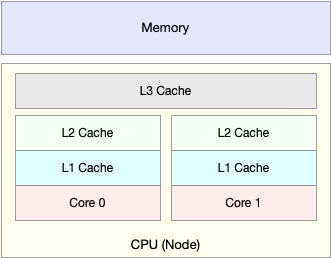
就像上面这张图显示的，CPU 缓存的速度介于 CPU 和内存之间，缓存的是热点的内存数据。根据不断增长的热点数据，这些缓存按照大小不同分为 L1、L2、L3 等三级缓存，其中 L1 和 L2 常用在单核中， L3 则用在多核中。从 L1 到 L3，三级缓存的大小依次增大，相应的，性能依次降低（当然比内存还是好得多）。而它们的命中率，衡量的是 CPU 缓存的复用情况，命中率越高，则表示性能越好。
这些指标都很有用，需要我们熟练掌握，总结成了一张图，帮助分类和记忆，可以当成 CPU 性能分析的“指标筛选”清单。
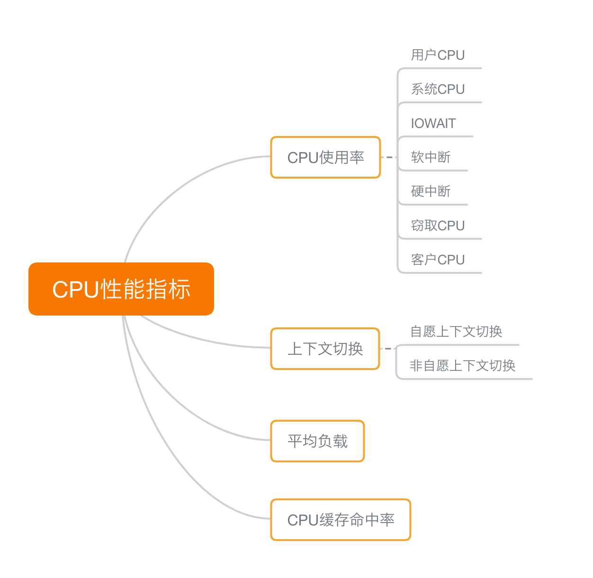
性能分析工具
有了指标，我们得用相应的工具分析得住这些指标。
首先，平均负载。我们可以用
uptime查看系统的平均负载；在的值平均负载升高后，又可以用mpstat和pidstat，分别观察了每个 CPU 和每个进程 CPU 的使用情况，进而找出了导致平均负载升高的进程。其次，上下文切换，用
vmstat查看系统的上下文切换次数和中断次数；然后通过pidstat，观察了进程的自愿上下文切换和非自愿上下文切换情况；最后通过pidstat，观察线程的上下文切换情况，找出了上下文切换次数增多的根源，进程 CPU 使用率升高，先用
top查看了系统和进程的 CPU 使用情况，发现 CPU 使用率升高的进程。再用perf top，观察进程的调用链，最终找出 CPU 升高的根源。系统的 CPU 使用率升高，先用
top观察到了系统 CPU 升高，但通过top和pidstat，却找不出高 CPU 使用率的进程。最终通过perf record和perf report查找祸根，可能是一些短时进程。对于短时进程，我还介绍了一个专门的工具execsnoop，它可以实时监控进程调用的外部命令。iowait升高，用top观察到了iowait升高，并发现了大量的不可中断进程和僵尸进程，接着我们用dstat发现是这是由磁盘读导致的，于是又通过pidstat找出了相关的进程。但我们用strace查看进程系统调用却失败了，最终还是用perf分析进程调用链， 。软中断，通过
top观察到，系统的软中断 CPU 使用率升高，接着查看/proc/softirqs， 找到了几种变化速率较快的软中断；然后通过sar命令，发现是网络小包的问题，最后再用tcpdump，找出网络帧的类型和来源，确定是一个SYN FLOOD攻击导致的。
日常工作中，备下所有的性能指标查看工具是不可能地，所以必要时请看下图，根据指标找工具：
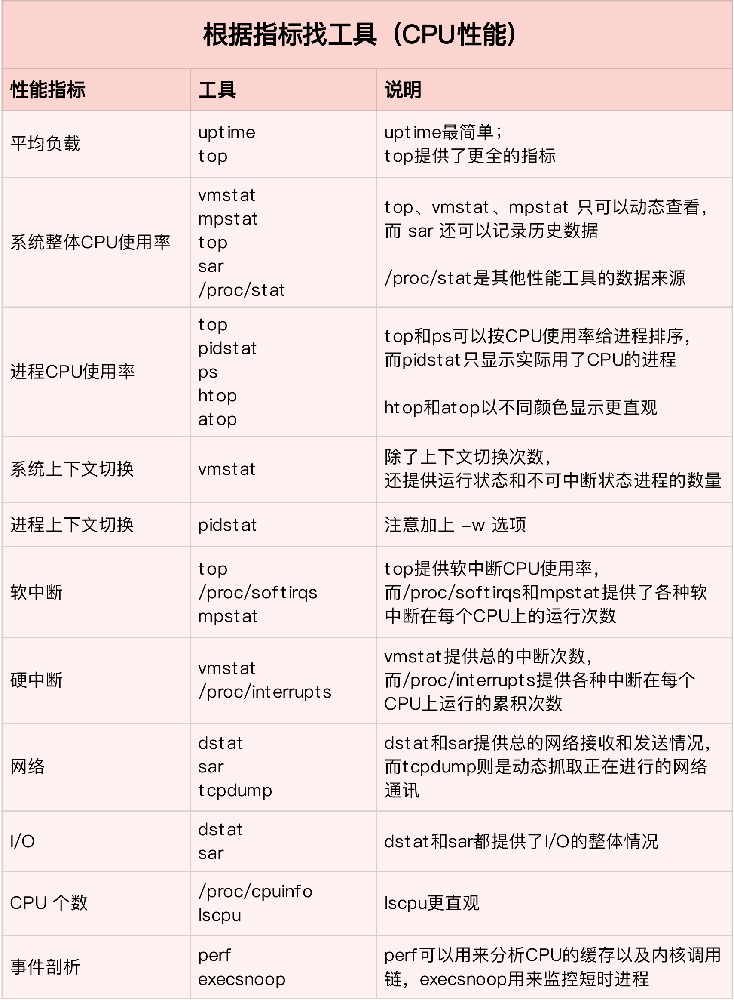
但是需要记住每个工具大概是干什么的，需要的时候才可以快速下手：
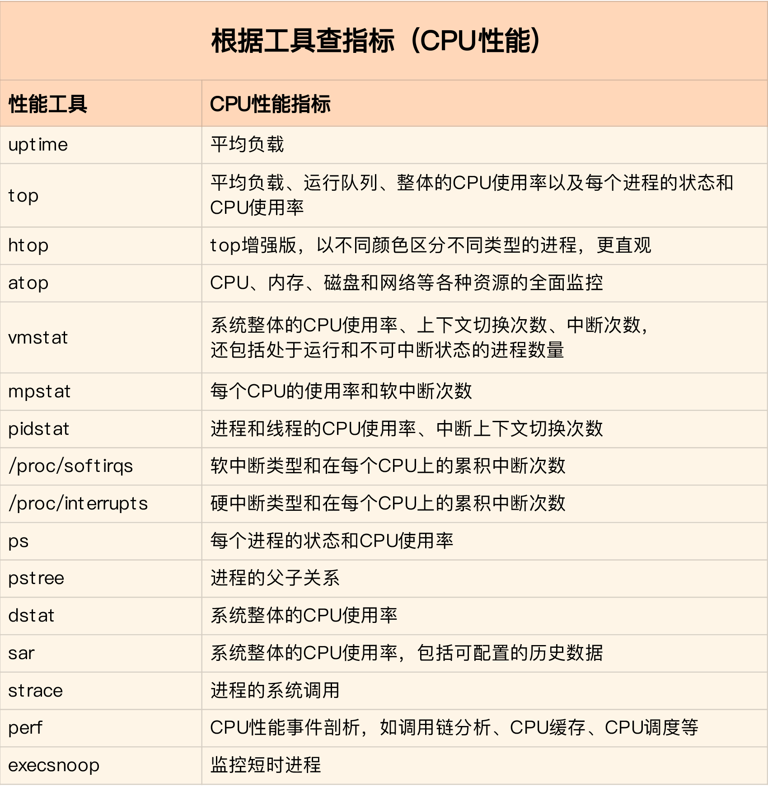
快速搞定 CPU 使用率升高的问题
虽然 CPU 的性能指标比较多，但要知道，既然都是描述系统的 CPU 性能，它们就不会是完全孤立的，很多指标间都有一定的关联。想弄清楚性能指标的关联性，就要通晓每种性能指标的工作原理。
举个例子，用户 CPU 使用率高，我们应该去排查进程的用户态而不是内核态。因为用户 CPU 使用率反映的就是用户态的 CPU 使用情况，而内核态的 CPU 使用情况只会反映到系统 CPU 使用率上。
有了一些基本认识，就可以帮助缩小排查范围，为了缩小排查范围，我通常会先运行几个支持指标较多的工具，如 top、vmstat 和 pidstat 。如下图：
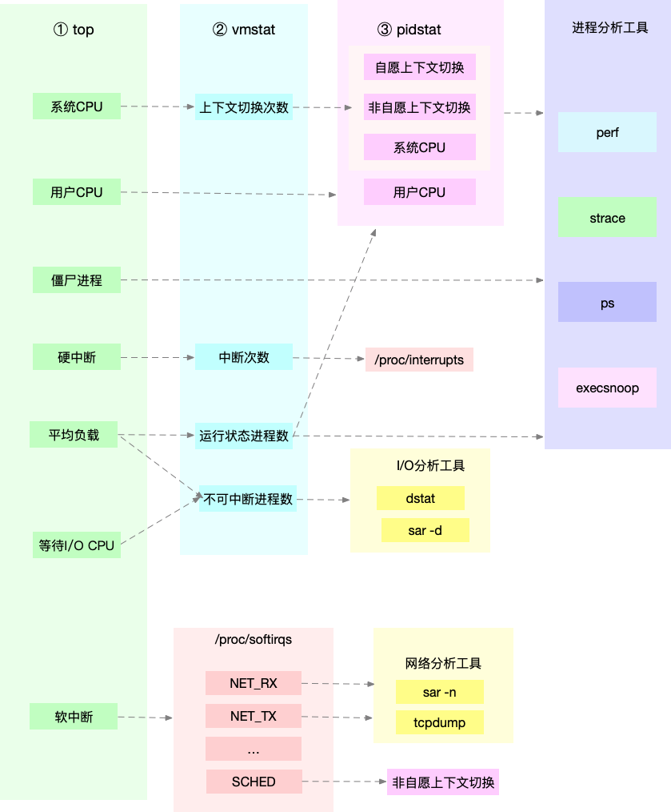
通过这张图可以发现，这三个命令，几乎包含了所有重要的 CPU 性能指标，比如：从 top 的输出可以得到各种 CPU 使用率以及僵尸进程和平均负载等信息。从 vmstat 的输出可以得到上下文切换次数、中断次数、运行状态和不可中断状态的进程数。从 pidstat 的输出可以得到进程的用户 CPU 使用率、系统 CPU 使用率、以及自愿上下文切换和非自愿上下文切换情况。
CPU 性能优化思路
在发现性能问题的瓶颈后，我们先要搞明白思路才能开始优化：
- 首先，得有指标衡量性能优化的效果，本次性能优化提升了多少；
- 其次，当多个因素共同造成性能问题时，优化顺序如何选择；
- 最后，当存在提升性能的多种方法时，该如何选择；
对于衡量指标，我们可以从应用程序角度和系统资源两个维度，以 web 应用为例：
- 应用程序的维度，我们可以用吞吐量和请求延迟来评估应用程序的性能。
- 系统资源的维度，我们可以用 CPU 使用率来评估系统的 CPU 使用情况。
对于多个性能问题共存的情况，应该先认真思考，哪个影响性能最严重，就从哪里入手，要找到根因。对于多种存在的优化方法时，选择成本最低的。
应用程序优化
首先，从应用程序的角度来说，降低 CPU 使用率的最好方法当然是，排除所有不必要的工作，只保留最核心的逻辑。比如减少循环的层次、减少递归、减少动态内存分配等等。除此之外，还有其他的性能优化方法：
编译器优化：很多编译器都会提供优化选项，适当开启它们，在编译阶段你就可以获得编译器的帮助，来提升性能。比如， gcc 就提供了优化选项 -O2，开启后会自动对应用程序的代码进行优化。
算法优化：使用复杂度更低的算法，可以显著加快处理速度。比如，在数据比较大的情况下，可以用 O(nlogn) 的排序算法（如快排、归并排序等），代替 O(n^2) 的排序算法（如冒泡、插入排序等）。
异步处理：使用异步处理，可以避免程序因为等待某个资源而一直阻塞，从而提升程序的并发处理能力。比如，把轮询替换为事件通知，就可以避免轮询耗费 CPU 的问题。
多线程代替多进程：前面讲过，相对于进程的上下文切换，线程的上下文切换并不切换进程地址空间，因此可以降低上下文切换的成本。
善用缓存：经常访问的数据或者计算过程中的步骤，可以放到内存中缓存起来，这样在下次用时就能直接从内存中获取，加快程序的处理速度。
系统优化
从系统的角度来说，优化 CPU 的运行，一方面要充分利用 CPU 缓存的本地性，加速缓存访问；另一方面，就是要控制进程的 CPU 使用情况，减少进程间的相互影响。
常见的 CPU 优化方法如下：
CPU 绑定：把进程绑定到一个或者多个 CPU 上，可以提高 CPU 缓存的命中率，减少跨 CPU 调度带来的上下文切换问题。
CPU 独占：跟 CPU 绑定类似，进一步将 CPU 分组，并通过 CPU 亲和性机制为其分配进程。这样，这些 CPU 就由指定的进程独占，换句话说，不允许其他进程再来使用这些 CPU。
优先级调整：使用 nice 调整进程的优先级，正值调低优先级，负值调高优先级。优先级的数值含义前面我们提到过，忘了的话及时复习一下。在这里，适当降低非核心应用的优先级，增高核心应用的优先级，可以确保核心应用得到优先处理。
为进程设置资源限制：使用 Linux cgroups 来设置进程的 CPU 使用上限，可以防止由于某个应用自身的问题，而耗尽系统资源。
NUMA（Non-Uniform Memory Access）优化：支持 NUMA 的处理器会被划分为多个 node，每个 node 都有自己的本地内存空间。NUMA 优化，其实就是让 CPU 尽可能只访问本地内存。
中断负载均衡：无论是软中断还是硬中断，它们的中断处理程序都可能会耗费大量的 CPU。开启 irqbalance 服务或者配置 smp_affinity，就可以把中断处理过程自动负载均衡到多个 CPU 上。